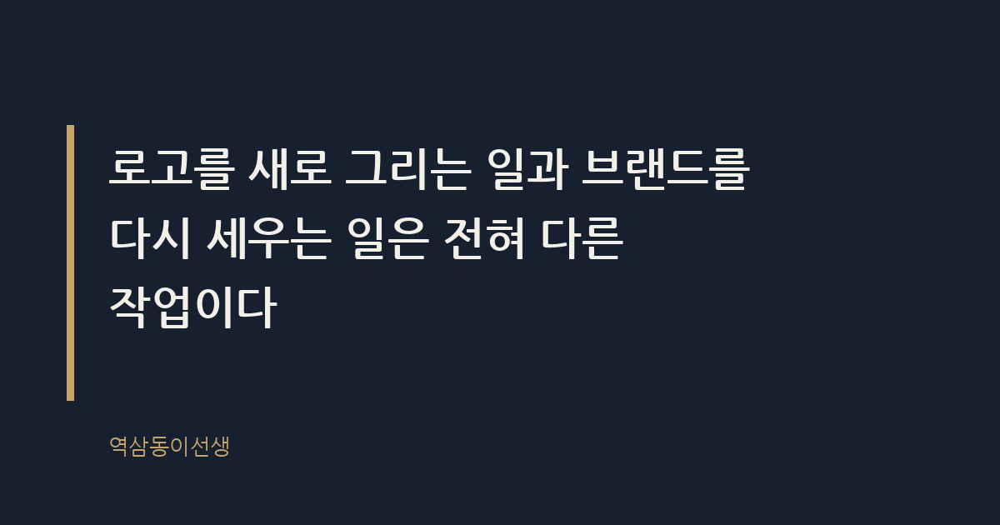
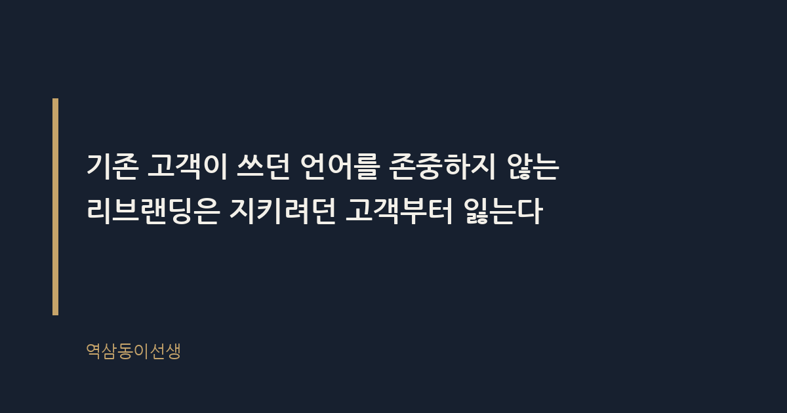

주제 리브랜딩이 실패하는 세 가지 패턴 (evergreen / brand)
제목 후보
- 리브랜딩 실패하는 이유, 흔한 세 가지 패턴 정리
핵심 키워드 '리브랜딩 실패'가 제목 앞부분에 위치해 검색 쿼리와 정확히 매칭된다. - 리브랜딩 실패 패턴 세 가지, 로고만 바꾸면 생기는 일
'로고만 바꾸면'이라는 구체적 행동이 들어가 클릭률은 높지만 키워드 위치가 다소 뒤로 밀린다. - 리브랜딩이 망하는 세 가지 신호와 체크포인트
'신호'와 '체크포인트'로 예방 정보성 검색을 노리지만 '리브랜딩 실패' 완전일치 키워드가 빠진다.
메타 설명 로고만 바꾸고 무너진 리브랜딩 사례로 보는 실패의 세 가지 패턴. 갭(Gap)과 트위터 사례로 원인과 교훈을 짚는다.
라벨 리브랜딩, 브랜드전략, 브랜딩실패, CI변경, 브랜드리뉴얼, 트위터X, 리브랜딩실패사례, 로고변경실패, 브랜드아이덴티티, 리브랜딩체크리스트
실용 자산 계산·기준 표 — 세 가지 패턴을 증상과 대표 사례로 나란히 비교해야 검색자가 한눈에 자가진단할 수 있어서 표로 정리했다.
발행 전 팩트체크
- 갭(Gap) 2010년 로고 교체 후 원복까지 걸린 기간(통상 '일주일' 또는 '6일'로 알려짐) 정확한 일자 확인 필요
- 트위터의 엑스(X) 리브랜딩 발표 및 적용 시점(2023년 7월)이 정확한지 확인 필요
이미지 (Blogger 편집기에 드래그해 넣으세요)

도입부 사진 · ⓒ viarami / Pexels


리브랜딩 실패하는 이유, 흔한 세 가지 패턴 정리
몇 달 전 동네 카페거리에 있던 프랜차이즈 커피숍 하나가 새 간판을 달았다. 로고도 바뀌고 외벽 색깔도 바뀌었는데, 메뉴판도 원두도 직원도 그대로였다. 두 달쯤 지나자 그 매장은 조용히 원래 간판으로 돌아갔다. 지나가며 그 모습을 보던 딸 써니가 물었다. “엄마, 저 가게 왜 또 이름 바꿨어?” 나는 선뜻 답을 못 했다.
리브랜딩이 실패하는 데는 몇 가지 반복되는 패턴이 있다. 로고를 새로 그리는 일과 브랜드를 다시 세우는 일은 전혀 다른 작업인데, 이 둘을 같은 일로 착각하는 순간 리브랜딩은 거의 예외 없이 흔들린다.
리브랜딩이란 무엇인가
리브랜딩이란 브랜드의 이름, 로고, 메시지뿐 아니라 고객이 그 브랜드를 만나고 기억하는 방식 전체를 다시 설계하는 작업이다. 로고 교체나 색상 변경은 리브랜딩의 결과물이지 그 자체가 리브랜딩은 아니다. 이 정의를 놓치는 순간부터 문제가 시작된다.
회의실에서 가장 많이 나오는 말이 “로고가 촌스럽다”다. 그런데 로고가 촌스러워서 매출이 떨어지는 경우는 생각보다 드물다. 문제는 대개 다른 데 있는데, 로고를 바꾸면 그 문제가 눈에 안 보이게 가려질 뿐이다.
리브랜딩과 단순 로고 교체는 다른가
리브랜딩과 로고 교체를 가르는 기준은 간단하다. 로고만 바꿨는데 조직 안에서 실제로 바뀐 게 하나도 없다면 그건 로고 교체이지 리브랜딩이 아니다. 2019년 던킨도너츠가 간판에서 ‘도너츠’를 떼고 ‘던킨’으로 이름을 줄였을 때, 회사는 동시에 커피 중심 메뉴 구성과 매장 레이아웃, 배달·테이크아웃 중심 운영 전략까지 함께 손봤다. 이름이 짧아진 건 결과물이었고, 실제로 바뀐 건 그 회사가 스스로를 정의하는 방식이었다.
이 차이를 구분하지 못하면 경영진은 디자인 시안을 몇 차례 더 수정하는 것으로 문제를 해결하려 든다. 시안을 고치고 또 고쳐도 본질이 그대로면 결과는 똑같다. 간판만 새로 단 카페가 그랬듯, 로고를 아무리 세련되게 바꿔도 손님이 느끼는 경험이 그대로면 재방문율은 꿈쩍하지 않는다.
패턴 1: 겉모습만 바꾸고 본질은 그대로 두는 경우
2010년 미국 의류 브랜드 갭(Gap)이 새 로고를 공개했다. 오랫동안 써온 파란 박스 로고를 단순한 산세리프 타입으로 바꿨는데, 소비자 반발이 거셌고 알려진 바로는 공개한 지 일주일도 안 돼 회사는 원래 로고로 돌아갔다. 로고 하나를 두고 벌어진 해프닝 같지만, 들여다보면 구조적인 문제였다. 갭은 로고를 바꾸기 전에 매장 경험도, 제품 라인도, 가격 전략도 바꾸지 않았다. 디자인만 새로 입힌 셈이다.
동네 카페 간판도 같은 경로를 밟았다. 로고와 색은 바뀌었는데 메뉴도 서비스도 그대로였으니, 손님 입장에서는 왜 바뀌었는지 납득할 이유가 없었다. 겉모습만 바뀐 리브랜딩은 기존 고객에게는 낯섦만 주고, 신규 고객에게는 설득력을 주지 못한다. 둘 다 못 얻는 가장 비효율적인 결과다.
패턴 2: 내부 설득 없이 결정부터 발표하는 경우
예전에 몸담았던 회사에서 새 CI를 발표하던 날이 기억난다. 경영진 몇 명이 몇 달에 걸쳐 외부 에이전시와 작업한 결과물을 전 직원 앞에 공개했다. 박수는 나왔지만 표정은 복잡했다. 회의실을 나오면서 옆자리 동료가 작게 물었다. “근데 이거, 우리가 왜 바꾼 거예요?” 아무도 명확히 답하지 못했다. 그날 이후 몇 주 동안 명함과 사인물을 다시 찍는 작업이 이어졌는데, 정작 그 명함을 들고 나갈 영업 담당자들은 새 이름의 배경을 여전히 제대로 설명하지 못했다.
리브랜딩은 로고를 공개하는 날 끝나는 게 아니라 그날부터 시작된다. 영업 담당자가 고객 앞에서 새 이름을 자신 있게 설명하지 못하면, 고객 응대 매뉴얼이 안 바뀌면, 명함과 메일 서명이 뒤죽박죽 섞여 쓰이면, 아무리 좋은 디자인도 내부에서부터 설득력을 잃는다. 톱다운으로 결정하고 발표만 요란하게 하는 리브랜딩이 조용히 좌초하는 이유가 여기에 있다.
패턴 3: 기존 고객과의 관계를 하루아침에 끊어버리는 경우
2023년 여름 트위터가 엑스(X)로 이름을 바꿨다. 파랑새 로고는 사라졌고, 오랫동안 “트윗한다”는 동사로 불리던 행위를 가리킬 말도 함께 흔들렸다. 로고와 사인을 교체하는 데 상당한 비용이 들었다는 이야기가 여러 매체를 통해 전해졌지만, 정확한 금액은 공식적으로 확인된 바 없다. 브랜드 이름이 일상 언어로 쓰일 만큼 자산이 쌓인 경우, 그 이름을 버리는 결정은 단순한 디자인 교체가 아니라 그동안 쌓은 관계 자체를 리셋하는 선택이다.
오랜 고객이 브랜드 이름을 부르는 방식, 로고를 보고 떠올리는 기억, 그 브랜드를 추천할 때 쓰는 표현까지 전부 브랜드 자산이다. 이 자산을 하루아침에 지워버리면 그 자리를 채우는 데 걸리는 시간과 비용은 처음 브랜드를 쌓을 때보다 훨씬 크다. 기존 고객이 쓰던 언어를 존중하지 않는 리브랜딩은 지키려던 고객부터 잃는다.
로고만 바꿔도 성공하는 경우도 있다
2011년 스타벅스는 로고에서 ‘STARBUCKS COFFEE’라는 글자를 완전히 지우고 초록색 사이렌 문양만 남겼다. 겉으로 보면 패턴 1과 똑같이 ‘겉모습만 바꾸는’ 결정처럼 보인다. 그런데 이 변화는 매장 경험, 제품 라인업, 고객이 브랜드를 부르는 방식이 이미 오랫동안 단단하게 쌓여 있었기 때문에 가능했다. 글자가 없어도 사이렌만 보고 스타벅스임을 알아보는 고객이 이미 충분했다. 본질이 먼저 서 있었기에 상징을 덜어내는 결정이 통한 셈이다.
이 사례가 주는 교훈은 분명하다. 로고를 단순화하거나 교체하는 일 자체가 문제가 아니라, 그 결정을 받쳐줄 본질이 미리 쌓여 있었는지가 성패를 가른다. 겉모습을 바꾸기 전에 본질이 먼저 단단한지부터 확인해야 하는 이유가 여기에 있다.
리브랜딩 실패 패턴 한눈에 보기
| 패턴 |
겉으로 드러나는 신호 |
대표 사례 |
| 겉모습만 바꾸는 경우 |
로고·색상만 바뀌고 제품·서비스·매장 경험은 그대로 |
갭(Gap) 2010년 로고 교체와 원복 |
| 내부 설득 없는 발표 |
직원도 새 이름의 이유를 설명하지 못함 |
사내 CI 발표 당일의 혼선 |
| 고객 자산 단절 |
기존 고객이 쓰던 이름·언어가 통째로 사라짐 |
트위터에서 엑스(X)로의 전환 |
세 패턴이 반복되는 이유
리브랜딩이 이 세 패턴으로 반복되는 이유는 로고 교체가 전략 수립보다 빠르고 눈에 띄는 성과로 보이기 때문이다. 새 대표가 취임하고 얼마 지나지 않아 로고부터 바뀌는 경우가 유독 많은 이유도 여기에 있다. 조직 구조를 손보고 제품 전략을 다시 짜는 일은 몇 년이 걸리지만, 로고 교체는 몇 달이면 결과물이 나온다. 눈에 보이는 성과를 빨리 보여주고 싶은 조직일수록 본질보다 상징에 먼저 손을 댄다.
또 하나, 리서치를 생략하는 조직이 많다. 기존 고객이 그 브랜드를 어떤 언어로 부르는지, 어떤 기억으로 각인하고 있는지 확인하지 않은 채 디자이너와 에이전시의 의견만으로 결정이 끝난다. 정작 그 브랜드를 매일 쓰는 사람들의 목소리는 회의실 밖에 있다.
리브랜딩 실패가 남기는 비용
2009년 미국 주스 브랜드 트로피카나가 패키지 디자인을 전면 교체했다. 오렌지에 빨대를 꽂은 상징적인 이미지를 지우고 깔끔한 타이포그래피 중심 디자인으로 바꿨는데, 매대 앞에서 트로피카나를 한눈에 알아보지 못한 소비자들이 돌아섰다. 몇 주 만에 매출이 크게 꺾였다는 보도가 나왔고, 회사는 결국 기존 디자인으로 되돌아갔다. 디자인 교체 비용, 유통 포장재를 다시 찍어낸 비용, 그 사이 경쟁 브랜드로 넘어간 고객을 되찾는 데 들어간 비용까지 더하면 실제 손실은 눈에 보이는 매출 하락보다 컸을 것으로 추산된다.
리브랜딩 실패의 비용은 디자인 비용 한 줄로 끝나지 않는다. 패키지를 다시 찍고, 매장 사인을 다시 걸고, 직원 교육 자료를 다시 만드는 비용까지 전부 두 번씩 들어간다. 처음부터 순서를 지켰다면 한 번으로 끝났을 일이 두 번, 세 번 반복된다. 경영진 보고서에는 디자인 비용만 한 줄로 잡히지만, 현장에서 체감하는 비용은 그보다 훨씬 두껍다.
리브랜딩 전에 점검해야 할 질문들
회의실에서 로고 시안을 펼치기 전에 먼저 확인해야 할 것들이 있다. 거창한 이론이 아니라 현장에서 리브랜딩이 삐걱거릴 때마다 빠져 있던 질문들을 모아 본다.
- 로고를 바꾸지 않고도 지금 겪는 문제를 해결할 방법은 없는가.
- 영업·고객응대 담당 직원이 새 이름과 메시지를 자기 언어로 설명할 수 있는가.
- 기존 고객이 브랜드를 부르던 이름과 표현을 리브랜딩 메시지에 반영했는가.
- 매장·제품·서비스 경험 중 실제로 바뀌는 것은 무엇인가.
- 발표 이후 최소 6개월간 일관되게 유지할 운영 계획이 있는가.
이 다섯 가지 중 두세 개에서라도 선뜻 답이 안 나온다면, 지금 준비하는 건 리브랜딩이 아니라 로고 교체일 가능성이 높다.
결국 리브랜딩이 성공하려면
씁쓸하면서도 흥미로운 지점은, 실패한 리브랜딩의 공통점이 전부 ‘순서’의 문제라는 사실이다. 본질을 먼저 바꾸고 상징을 나중에 입히면 자연스럽게 따라오는데, 상징부터 바꾸고 본질을 나중으로 미루면 거의 매번 삐걱거린다. 동네 카페 간판이 두 달 만에 원래대로 돌아간 것도, 세계적인 브랜드가 로고를 일주일 만에 되돌린 것도 결국 같은 순서의 문제였다.
브랜드 아이덴티티와 기업 이미지 쇄신 전략을 함께 들여다보면 리브랜딩이 왜 ‘디자인 프로젝트’가 아니라 ‘조직 프로젝트’인지 더 선명하게 보인다.
Q. 다니던 회사나 자주 가던 매장이 리브랜딩 후 원래대로 돌아간 모습, 본 적 있으신가요?